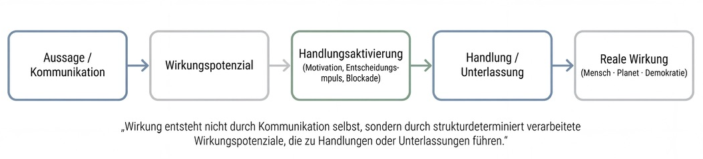

Prolog - Warum wir über Wirkung sprechen müssen
Wir leben in einer Zeit, in der Kommunikation nicht mehr nur Meinungen austauscht, sondern Realität formt. Worte entscheiden nicht allein darüber, was wir denken - sondern zunehmend darüber, was wir tun, was wir lassen und was wir verzögern. Sie beeinflussen Investitionen, politische Prozesse, individuelle Entscheidungen, psychische Belastungen und ökologische Pfade. Kommunikation ist damit kein „weiches“ Phänomen mehr, sondern ein systemischer Wirkfaktor.
Gleichzeitig wird unser öffentlicher Diskurs noch immer überwiegend entlang alter Kategorien geführt: wahr oder falsch, Meinung oder Fakt, erlaubt oder problematisch. Diese Unterscheidungen sind wichtig - aber sie greifen zu kurz. Denn sie sagen wenig darüber aus, was Kommunikation bewirkt, wenn sie millionenfach verstärkt, emotional aufgeladen und algorithmisch verteilt wird. Meinungsfreiheit beantwortet nicht die Frage nach Wirkungsverantwortung.
Was wir derzeit erleben, ist deshalb weniger eine Krise der Wahrheit als eine Krise der Wirkung. Politische Debatten eskalieren nicht nur argumentativ, sondern systemisch. Vertrauen erodiert, Entscheidungsprozesse blockieren, Transformationspfade verzögern sich. Und diese Effekte bleiben nicht abstrakt: Sie schlagen sich nieder im Alltag von Menschen, in der Stabilität demokratischer Institutionen - und in der physischen Realität unseres Planeten.
Vor diesem Hintergrund markiert Democracy Intelligence einen entscheidenden Fortschritt. Der Ansatz verschiebt den Fokus weg von moralischen Bewertungen und Gesinnungsfragen hin zur Analyse kommunikativer Wirkung. Nicht die Frage, ob etwas gesagt werden darf, steht im Zentrum, sondern die Frage, was es im System auslöst. Damit wird erstmals systematisch sichtbar, wo Kommunikation demokratische Risiken erzeugt - und wo öffentliche Diskurse ihre stabilisierende Funktion verlieren.
Doch so wichtig dieser Schritt ist, so deutlich wird zugleich eine weiterführende Frage: Reicht es aus, Wirkung sichtbar zu machen? Oder müssen wir darüber hinaus verstehen, wie Wirkung entsteht, wo sie sich materialisiert und wie Systeme so gestaltet werden können, dass destruktive Wirkungen nicht eskalieren, sondern bearbeitet werden?
Denn Kommunikation wirkt nicht nur auf Demokratie. Sie wirkt auf Menschen - auf Sicherheit, Überforderung, Angst oder Handlungsfähigkeit. Und sie wirkt auf den Planeten - indem sie Entscheidungen verzögert, Investitionen lenkt oder Pfadabhängigkeiten verfestigt. Wirkung ist stets mehrdimensional. Sie entsteht nicht an der Oberfläche des Diskurses, sondern in den Resonanzräumen sozialer, ökonomischer und ökologischer Systeme.
Dieser Artikel versteht sich daher als Einladung, zwei Perspektiven zusammenzudenken: die wirkungsanalytische Stärke von Democracy Intelligence - und die systemische Logik der Wirkungsökonomie, die Wirkung auf Mensch, Planet und Demokratie gemeinsam in den Blick nimmt. Nicht als Konkurrenz, sondern als notwendige Ergänzung in einer Zeit, in der Kommunikation zu einem der mächtigsten Steuerungsfaktoren unserer Gesellschaft geworden ist.
Teil I - Das eigentliche Problem unserer Zeit: Wirkung ohne Verantwortung
Öffentliche Kommunikation war nie folgenlos. Doch sie war lange begrenzt: räumlich, zeitlich, sozial. Aussagen zirkulierten in überschaubaren Öffentlichkeiten, wurden eingeordnet, relativiert, vergessen. Wirkung entstand - aber sie blieb lokal, langsam und korrigierbar. Diese Voraussetzungen sind verschwunden.
Heute wirken Worte in Echtzeit, skaliert durch digitale Plattformen, algorithmisch verstärkt, emotional zugespitzt und dauerhaft verfügbar. Kommunikation erreicht nicht nur viele Menschen, sondern ganze Milieus, Resonanzräume und Entscheidungsketten. Sie prägt Wahrnehmungen, beeinflusst Verhalten und strukturiert Handlungsoptionen. Damit hat sich ihre Rolle fundamental verändert: Kommunikation ist nicht mehr nur Ausdruck gesellschaftlicher Prozesse - sie ist selbst zu einem steuernden Faktor geworden.
Trotzdem behandeln wir sie noch immer, als wäre sie primär ein normatives oder journalistisches Thema. Der öffentliche Diskurs kreist um Fragen wie: Darf man das sagen? Ist es wahr oder falsch? Ist es legitim oder problematisch? Diese Fragen sind unverzichtbar für eine freie Gesellschaft. Doch sie adressieren vor allem die Rechtmäßigkeit von Aussagen, nicht ihre systemische Wirkung.
Genau hier liegt der blinde Fleck unserer Zeit. Denn Wirkung entsteht nicht erst dort, wo Grenzen überschritten werden. Sie entsteht bereits dort, wo Kommunikation Vertrauen untergräbt, Unsicherheit verstärkt, Polarisierung vertieft oder Handlungsfähigkeit blockiert - selbst dann, wenn einzelne Aussagen für sich genommen rechtlich zulässig oder faktisch nicht eindeutig widerlegbar sind. Wirkung kennt keine klare Trennlinie zwischen erlaubt und unerlaubt. Sie entfaltet sich graduell, kumulativ und häufig unbeabsichtigt.
Diese Dynamik zeigt sich besonders deutlich in gesellschaftlichen Transformationsdebatten. Ob Energie, Mobilität, Migration oder soziale Sicherung: Öffentliche Auseinandersetzungen entscheiden zunehmend darüber, ob Veränderungen umgesetzt, verzögert oder verhindert werden. Kommunikation beeinflusst, ob Menschen investieren oder abwarten, ob sie Vertrauen fassen oder sich zurückziehen, ob politische Prozesse als gestaltbar oder als Bedrohung wahrgenommen werden. Damit wirkt sie direkt auf reale Systeme - ökonomisch, sozial und ökologisch.
Was wir erleben, ist daher kein Versagen einzelner Akteure, Medien oder Meinungen. Es ist ein Systemproblem. Unsere Gesellschaft verfügt über ausgefeilte Mechanismen zur Regulierung von Märkten, Produkten, Emissionen und Risiken - aber kaum über Instrumente, um die Wirkung von Kommunikation systematisch zu beobachten, einzuordnen und rückzukoppeln. Wir haben eine hochentwickelte Infrastruktur für Meinungsfreiheit, aber eine unterentwickelte Infrastruktur für Wirkungsverantwortung.
Diese Asymmetrie wird zunehmend gefährlich. Denn Systeme, die Wirkung nicht reflektieren, reagieren spät oder gar nicht. Sie überlassen Eskalationen dem Zufall, Polarisierung der Dynamik sozialer Medien und gesellschaftliche Kosten der Zukunft. Kommunikation bleibt formal frei - aber faktisch folgenreich, ohne dass ihre Effekte transparent oder bearbeitbar wären.
Genau an dieser Stelle setzt ein Perspektivwechsel an, der nicht moralisch, sondern systemisch ist. Er fragt nicht zuerst nach Schuld, Absicht oder Gesinnung, sondern nach Wirkung, Risiko und Stabilität. Er betrachtet Öffentlichkeit nicht als Marktplatz konkurrierender Meinungen, sondern als sensiblen Raum, dessen Funktionsfähigkeit für Demokratie, gesellschaftlichen Zusammenhalt und Zukunftsfähigkeit entscheidend ist.
Dieser Perspektivwechsel ist die Voraussetzung dafür, Kommunikation nicht zu kontrollieren, sondern sie überhaupt erst verstehen zu können - als Teil eines komplexen Wirkungsgefüges, das weit über den Diskurs hinausreicht. Und genau hier beginnt der Ansatz, der mit Democracy Intelligence erstmals systematisch formuliert wurde.
Teil II - Democracy Intelligence: Ein notwendiger Paradigmenwechsel
Mit Democracy Intelligence gGmbH wird ein Denkraum betreten, den der öffentliche Diskurs lange gemieden hat. Der Ansatz verschiebt den Fokus weg von moralischen Zuschreibungen, Gesinnungsfragen oder bloßem Fact-Checking - hin zu einer systematischen Betrachtung der Wirkung von Kommunikation. Nicht die Legitimität einzelner Meinungen steht im Zentrum, sondern ihre potenziellen Effekte auf das demokratische System.
Dieser Perspektivwechsel ist alles andere als trivial. Er bedeutet, Kommunikation nicht länger primär als individuelles Ausdrucksrecht zu behandeln, sondern als einen strukturellen Faktor, der kollektive Dynamiken erzeugt: Vertrauen oder Misstrauen, Orientierung oder Verunsicherung, Zusammenhalt oder Polarisierung. Democracy Intelligence macht sichtbar, dass Demokratie nicht nur von formalen Regeln lebt, sondern von der Qualität ihrer öffentlichen Resonanzräume.
Von Wahrheit zu Wirkung
Klassische Ansätze der Diskursregulierung kreisen um die Frage, ob Aussagen wahr oder falsch, zulässig oder unzulässig sind. Democracy Intelligence setzt an einem anderen Punkt an. Es fragt: Welches Wirkungspotenzial entfaltet eine Aussage, wenn sie in einem bestimmten Kontext, mit bestimmter Reichweite und in bestimmten Publika zirkuliert? Damit wird Kommunikation nicht isoliert betrachtet, sondern als Teil eines dynamischen Systems aus Wiederholung, Verstärkung und emotionaler Aufladung.
Entscheidend ist dabei: Democracy Intelligence beschreibt keine Wirkung im eigentlichen Sinne, sondern identifiziert Wirkungspotenziale einzelner Aussagen - also Effekte, die sich erst unter bestimmten strukturellen Bedingungen in sozialen Resonanzsystemen tatsächlich entfalten können. Der Ansatz verzichtet bewusst auf Verbote oder Sanktionen. Er arbeitet mit Skalen, Wahrscheinlichkeiten und Risikoeinschätzungen. Aussagen werden nicht moralisch bewertet, sondern in ihrem Potenzial zur Verzerrung, Polarisierung oder Destabilisierung analysiert. Ziel ist nicht Kontrolle, sondern Orientierung - für Öffentlichkeit, Medien, Politik und Zivilgesellschaft.
Öffentlichkeit als System - eine habermasianische Anschlussstelle
In dieser Hinsicht ist Democracy Intelligence bemerkenswert anschlussfähig an die Demokratietheorie von Jürgen Habermas. Habermas verstand Öffentlichkeit als einen Raum der Verständigung, in dem demokratische Legitimität durch kommunikative Prozesse entsteht. Voraussetzung dafür ist jedoch, dass diese Prozesse nicht systematisch verzerrt werden.
Democracy Intelligence knüpft genau hier an - allerdings ohne den normativen Idealismus früher Öffentlichkeitstheorien zu reproduzieren. Es geht nicht davon aus, dass Diskurse automatisch rational oder ausgleichend verlaufen. Im Gegenteil: Es nimmt ernst, dass moderne Öffentlichkeiten durch Plattformlogiken, algorithmische Verstärkung und emotionale Mobilisierung strukturell verzerrt sind. Öffentlichkeit wird damit nicht romantisiert, sondern als vulnerables System verstanden, dessen Funktionsfähigkeit beobachtet und geschützt werden muss.
Die eigentliche Stärke: Transparenz statt Zensur
Die besondere Qualität von Democracy Intelligence liegt in seiner methodischen Zurückhaltung. Der Ansatz:
bewertet Aussagen, nicht Personen
arbeitet mit graduellen Skalen statt mit binären Urteilen
verzichtet auf Verbote zugunsten von Transparenz
macht Risiken sichtbar, ohne Verhalten vorzuschreiben
Damit wird ein Raum geschaffen, in dem demokratische Gesellschaften lernen können - über sich selbst, über ihre Kommunikationsdynamiken und über die unbeabsichtigten Effekte öffentlicher Debatten. Democracy Intelligence fungiert in diesem Sinne als Sensor: ein Frühwarnsystem für kommunikative Risiken, das Orientierung ermöglicht, ohne Freiheit einzuschränken.
Gerade in einer Zeit, in der Zensurvorwürfe schnell erhoben werden und Vertrauen in Institutionen fragil ist, ist diese Zurückhaltung keine Schwäche, sondern eine Stärke. Sie macht den Ansatz politisch anschlussfähig, demokratietheoretisch legitim und gesellschaftlich tragfähig.
Zwischenfazit
Democracy Intelligence leistet einen entscheidenden Schritt: Es verschiebt den demokratischen Diskurs von der Frage nach Wahrheit hin zur Frage nach Wirkungspotenzial - und schafft damit erstmals eine systematische Diagnostik für demokratische Kommunikationsrisiken. Es macht sichtbar, wo öffentliche Debatten ihre stabilisierende Funktion verlieren und in polarisierende Dynamiken kippen können.
Doch genau in dieser Stärke liegt zugleich die Grenze des Ansatzes. Denn Wirkung wird hier diagnostisch vorbereitet, aber noch nicht dort verortet, wo sie tatsächlich entsteht und sich materialisiert. Diese erkenntnistheoretische Frage markiert den Übergang zur nächsten Perspektive.
Die von Democracy Intelligence verwendete Analogie des Beipackzettels trifft dabei einen zentralen Punkt moderner Wirkungsdiagnostik. Wie ein Beipackzettel beschreibt sie Risiken eines Wirkstoffs unabhängig von individueller Anwendung: standardisiert, vergleichbar und ohne moralische Zuschreibung. Damit wird transparent, welches Wirkungspotenzial eine Aussage im öffentlichen Raum entfalten kann.
Gleichzeitig verweist diese Analogie auf eine notwendige Modellgrenze. Beipackzettel beschreiben das Medikament - nicht den Zustand des Körpers, nicht seine Vorerkrankungen, nicht die Wechselwirkungen mit anderen Wirkstoffen. Übertragen auf Kommunikation bedeutet das: Die Wirkung einer Aussage lässt sich nicht isoliert aus ihr selbst ableiten. Sie hängt davon ab, welchen Deutungsrahmen ein System bereits ausgebildet hat, welche Erfahrungen vorausgegangen sind und welche weiteren Narrative gleichzeitig wirksam sind. Wirkung ist damit nicht additiv, sondern kontextuell und kumulativ.
Diese Einsicht markiert keinen Mangel der Wirkungsdiagnostik, sondern ihren Übergangspunkt. Denn dort, wo einzelne Aussagen nicht mehr isoliert wirken, sondern sich in Resonanzsystemen überlagern, beginnt eine andere Ebene der Analyse - eine, die sich weniger auf Inhalte als auf Systemdynamiken richtet.
Teil III - Die erkenntnistheoretische Zäsur: Wo Wirkung wirklich entsteht
So überzeugend der Ansatz von Democracy Intelligence ist, bleibt eine grundlegende Frage offen - eine Frage, die weniger politisch als erkenntnistheoretisch ist. Sie betrifft nicht die Analyse von Kommunikation, sondern den Ort der Wirkung selbst.
Denn Kommunikation entfaltet ihre Wirkung nicht dort, wo sie gesendet wird. Aussagen besitzen keine inhärente Wirkung. Sie tragen weder ein festes Bedeutungsetikett noch eine eindeutig vorhersehbare Konsequenz in sich. Was sie tragen, ist ein Wirkungspotenzial - ein Möglichkeitsraum, der sich erst unter bestimmten Bedingungen realisiert. Dieses Wirkungspotenzial führt nicht unmittelbar zu Wirkung. Es wirkt zunächst als Handlungsaktivierung: als Impuls, der Handlungen oder Unterlassungen wahrscheinlicher macht. Erst aus diesen realen Entscheidungen entsteht Wirkung im eigentlichen Sinne. Wirkung entsteht damit im Empfängersystem - dort, wo Kommunikation aufgenommen, interpretiert, emotional verarbeitet und in Handeln übersetzt wird: im Kontext von Erfahrungen, Erwartungen, Ängsten, Zugehörigkeiten und sozialen Resonanzräumen.

Dieses Empfängersystem ist jedoch kein neutraler Reaktionsraum. Es ist geprägt durch seine eigene Geschichte, durch frühere Expositionen, durch soziale Einbettung und durch bestehende Deutungsmuster. In der systemtheoretischen Tradition - etwa bei Humberto Maturana - spricht man in diesem Zusammenhang von Strukturdeterminiertheit: Systeme reagieren nicht frei auf Reize, sondern gemäß ihrer jeweils ausgebildeten inneren Struktur.
Strukturdeterminiertheit ist dabei kein rein historisches oder zufälliges Phänomen. Soziale Systeme können gezielt vorstrukturiert werden - durch wiederholte Narrative, durch strategische Rahmungen und durch die systematische Besetzung von Deutungsmustern. Thinktank-Netzwerke, koordinierte Kommunikationsstrategien und Formen hybrider Einflussnahme wirken nicht primär über einzelne Aussagen, sondern über die langfristige Prägung von Resonanzräumen. Wirkung entsteht dadurch nicht plötzlich, sondern wird wahrscheinlicher, stabiler und resistenter gegenüber Korrektur.
Wirkungspotenziale führen jedoch nicht unmittelbar zu Wirkung. Zwischen kommunikativer Exposition und realer Wirkung liegt eine entscheidende Schwelle: die Handlungsaktivierung. Wirkungspotenziale können Entscheidungen auslösen - oder blockieren. Sie können zu Handlungen führen, zu Unterlassungen, zu Verzögerungen oder zu Abwartestrategien. Erst dort, wo Menschen handeln oder nicht handeln, materialisiert sich Wirkung. Wirkung ist damit kein unmittelbares Resultat von Kommunikation, sondern das Ergebnis strukturdeterminiert aktivierter oder gehemmter Handlung.
Übertragen auf öffentliche Kommunikation bedeutet das: Aussagen lösen keine Wirkung „aus“. Sie werden von Systemen entsprechend ihrer vorhandenen Struktur verarbeitet. Dieselbe Aussage kann deshalb in unterschiedlichen Resonanzsystemen völlig unterschiedliche Effekte entfalten - von Mobilisierung über Abwehr bis hin zur Verstärkung bestehender Überzeugungen. Wirkung ist damit nicht im Inhalt verankert, sondern im Zusammenspiel von Aussage, Systemstruktur und Kontext.
In konstruktivistischer Perspektive gilt: Alles, was gesagt wird, wird von einem Beobachter gesagt. Und alles, was wirkt, wirkt in einem Beobachtersystem. Bedeutung wird nicht übertragen, sondern konstruiert. Wirkung ist kein Attribut der Aussage, sondern ein Ergebnis kollektiver Sinnbildung.
Diese Einsicht verschiebt den Blick grundlegend. Kommunikation ist kein linearer Prozess vom Sender zum Empfänger, sondern ein zirkuläres Geschehen in sozialen Systemen. Empfänger sind dabei keine Endpunkte, sondern Übergangszustände: Sie verarbeiten Kommunikation nicht nur, sondern geben sie weiter, transformieren sie, emotionalisieren oder brechen sie. Wirkung entsteht dadurch nicht punktuell, sondern kumulativ, sequenziell und pfadabhängig - verstärkt durch Wiederholung, Gruppendynamiken und algorithmische Selektion.
Das bedeutet nicht, dass Analysen von Aussagen irrelevant wären. Im Gegenteil: Sie sind notwendig, um Wirkungspotenziale sichtbar zu machen und kommunikative Risiken zu diagnostizieren. Doch sie markieren eine Modellgrenze. Jenseits dieser Grenze beginnt die eigentliche Systemdynamik: Dort, wo sich kommunikative Impulse überlagern, wo Vorprägungen wirken, wo Entscheidungen getroffen, Investitionen verschoben oder Vertrauen verloren geht.
Aus dieser Perspektive wird deutlich: Demokratie wird nicht primär durch Aussagen gefährdet, sondern durch die Wirkungen, die sich in sozialen Systemen verfestigen. Polarisierung, Angst, Überforderung oder Rückzug sind keine kommunikativen Phänomene im engeren Sinne - sie sind systemische Effekte. Sie entstehen nicht, weil etwas gesagt wurde, sondern weil etwas so verstanden, verstärkt und integriert wurde, dass es handlungswirksam wird.
Diese Erkenntnis verschiebt die Verantwortungsebene. Sie löst sich von der Vorstellung, Wirkung ließe sich allein über Inhaltskontrolle oder Diskursbeobachtung erfassen. Stattdessen rückt die Frage in den Mittelpunkt, wie Systeme gebaut sind, in denen bestimmte kommunikative Impulse eskalieren - und andere nicht. Wirkung wird damit zu einer Frage der Systemarchitektur, nicht der einzelnen Aussage.
Genau an diesem Punkt öffnet sich der Raum für eine erweiterte Perspektive: eine Perspektive, die Wirkung nicht nur analysiert, sondern sie in ihren psychischen, sozialen und materiellen Konsequenzen ernst nimmt. Und die fragt, wie diese Wirkung systemisch bearbeitet werden kann - nicht nur im Diskurs, sondern in der Realität von Menschen, Märkten und Infrastrukturen.
Diese Perspektive bildet den Kern der Wirkungsökonomie.
Teil IV - Die Wirkungsökonomie: Wirkung als systemische Realität
Wenn Wirkung nicht an der Aussage endet, sondern sich im Empfängersystem materialisiert, dann reicht es nicht aus, Kommunikation allein auf der Ebene des Diskurses zu betrachten. Wirkung setzt sich fort. Sie verlässt den Raum der Sprache und tritt ein in den Raum der Entscheidungen, der Infrastrukturen und der physischen Realität. Genau hier setzt die Wirkungsökonomie an.
Die Wirkungsökonomie versteht Wirkung nicht als abstrakte Kategorie, sondern als reale Systemgröße. Sie fragt nicht nur, ob Kommunikation Wirkungspotenziale erzeugt, sondern wie, wo und wodurch sich diese Wirkung verfestigt. Entscheidend ist dabei: Wirkung ist immer mehrdimensional. Sie betrifft nie nur einen Bereich, sondern wirkt gleichzeitig auf Menschen, den Planeten und die Demokratie.
Wirkung auf Menschen: Kommunikation als psychischer und sozialer Faktor
Öffentliche Debatten beeinflussen nicht nur Meinungen, sondern auch emotionale Zustände und Handlungsspielräume. Kommunikation kann Sicherheit geben oder Angst erzeugen, Orientierung bieten oder Überforderung verstärken. Sie entscheidet darüber, ob Menschen sich handlungsfähig fühlen oder in Abwehr, Rückzug und Vermeidung gehen.
In Transformationsprozessen ist diese Dimension zentral. Wenn Kommunikation Unsicherheit verstärkt, blockiert sie Entscheidungen - unabhängig davon, ob die zugrunde liegenden Maßnahmen sachlich sinnvoll oder notwendig sind. Wirkung zeigt sich dann nicht in Zustimmung oder Ablehnung, sondern in Lähmung: Investitionen werden aufgeschoben, Entscheidungen vertagt, Möglichkeiten nicht genutzt. Diese Effekte sind real, messbar und folgenreich - auch wenn sie selten als kommunikative Wirkung benannt werden.
Wirkung auf den Planeten: Diskurse werden zu Emissionen
Besonders deutlich wird die materielle Dimension von Kommunikation dort, wo politische Debatten ökologische Pfade beeinflussen. Wenn öffentliche Auseinandersetzungen Klimaschutzmaßnahmen delegitimieren, verzögern oder emotional aufladen, bleibt dies nicht folgenlos. Verzögerte Entscheidungen führen zu verpassten Sanierungen, zu Investitionsstopps und zur Verfestigung fossiler Infrastrukturen.
Die Wirkung von Kommunikation wird hier physisch. Diskursive Dynamiken schlagen sich in Emissionen nieder, in Ressourcenverbrauch und in verlorener Zeit - einer Ressource, die im ökologischen Kontext nicht rückholbar ist. Wirkung wird irreversibel. Aus Sicht der Wirkungsökonomie ist dies der Punkt, an dem Diskurs nicht mehr nur demokratische Qualität betrifft, sondern planetare Grenzen berührt.
Wirkung auf Demokratie: Stabilität als emergente Größe
Auch demokratische Stabilität ist keine rein diskursive Kategorie. Sie entsteht aus dem Zusammenspiel von Vertrauen, sozialer Sicherheit, Handlungsspielräumen und Zukunftserwartungen. Kommunikation beeinflusst all diese Faktoren zugleich. Polarisierte Debatten wirken nicht nur auf Meinungen, sondern auf das Gefühl gesellschaftlicher Zugehörigkeit und die Bereitschaft, kollektive Entscheidungen mitzutragen.
Die Wirkungsökonomie betrachtet Demokratie deshalb nicht isoliert, sondern eingebettet in materielle und soziale Kontexte. Wo Menschen sich überfordert fühlen, wo ökologische Risiken eskalieren und wo ökonomische Unsicherheit zunimmt, verliert Demokratie an Tragfähigkeit - unabhängig davon, wie offen der Diskurs formal ist.
Öffentliche Debatten entstehen dabei längst nicht mehr ausschließlich im nationalen Raum. In digitalen Öffentlichkeiten überlagern sich Narrative, Konfliktlinien und Deutungsmuster aus unterschiedlichen Kontexten. Politische Auseinandersetzungen werden dadurch Teil globaler Resonanzsysteme, in denen externe Akteure nicht durch direkte Steuerung, sondern durch Eskalation, Polarisierung und zeitliche Verzögerung wirken. Wirkung entsteht hier weniger durch Überzeugung als durch Destabilisierung - insbesondere dort, wo Entscheidungsprozesse ohnehin unter Zeit- und Transformationsdruck stehen.
Das Beispiel Heizgesetz: Wenn Diskurs zur Systemwirkung wird
Die öffentliche Debatte um das Gebäudeenergiegesetz macht diese Zusammenhänge exemplarisch sichtbar. Unabhängig von juristischen Details oder politischen Bewertungen entfaltete die Kommunikation Wirkung auf allen drei Ebenen zugleich:
Auf Menschen: Verunsicherung, Angst vor Überforderung, Entscheidungsblockaden
Auf die Demokratie: Polarisierung, Vertrauensverlust, Eskalation des Diskurses
Auf den Planeten: Verzögerte Sanierungen, Investitionszurückhaltung, fossile Lock-ins
Diskursive Wirkung wurde hier zu systemischer Realität. Nicht, weil Kommunikation „falsch“ war, sondern weil sie in einem System wirkte, das auf Eskalation, nicht auf Verarbeitung ausgelegt ist.
Wirkung als Steuerungsgröße
Aus wirkungsökonomischer Sicht folgt daraus ein zentraler Schluss: Wirkung muss zur Bezugsgröße von Systemgestaltung werden. Nicht Moral, nicht Absicht, nicht Gesinnung - sondern die realen Effekte auf Mensch, Planet und Demokratie.
Das bedeutet nicht, Kommunikation zu regulieren oder Meinungen zu steuern. Es bedeutet, Systeme so zu gestalten, dass erkannte Wirkungen nicht folgenlos bleiben. Preise, Anreize, Investitionsbedingungen und institutionelle Regeln müssen so ausgerichtet sein, dass sie positive Wirkungen verstärken und destruktive Wirkungen begrenzen - unabhängig davon, ob diese durch Kommunikation, Märkte oder politische Prozesse entstehen.
An diesem Punkt wird deutlich: Die Wirkungsökonomie verschiebt den Fokus von der Analyse zur Gestaltung. Sie fragt nicht nur, was wirkt, sondern wie Systeme lernen können, mit Wirkung verantwortungsvoll umzugehen.
Wo Steuerung ansetzt - und wo bewusst nicht
Wenn Wirkung nicht an der Aussage selbst entsteht, sondern sich erst in sozialen Resonanzsystemen materialisiert, verschiebt sich auch die Frage nach Steuerung. Steuerung kann dann weder beim Sender ansetzen - ohne in Zensur oder moralische Überhöhung zu kippen - noch beim einzelnen Empfänger, ohne Autonomie und demokratische Selbstbestimmung zu untergraben.
Aus wirkungsökonomischer Perspektive greift Steuerung daher dort, wo Wirkung verstärkt, übersetzt und verfestigt wird. Gemeint sind jene Systeme, die kommunikative Impulse skalieren, in Entscheidungen überführen und in reale Folgen übersetzen: Reichweiten- und Verstärkungslogiken, Übersetzungsstellen von Diskurs zu Investition und politischer Umsetzung sowie die sozialen, ökologischen und demokratischen Folgesysteme, in denen Wirkung materiell wird.
An dieser Stelle wird auch der Unterschied zwischen Analyse und Gestaltung deutlich. Democracy Intelligence macht sichtbar, wo kommunikative Dynamiken Risiken erzeugen und demokratische Resonanzräume unter Stress geraten. Die Wirkungsökonomie setzt dort an, wo diese Erkenntnisse nicht folgenlos bleiben dürfen. Sie fragt, wie Regeln, Anreize, Preise und institutionelle Rahmenbedingungen so gestaltet werden können, dass erkannte Wirkungen abgefedert, korrigiert oder in lernfähige Prozesse überführt werden.
Kommunikation wird in diesem Verständnis nicht durch Kontrolle resilient, sondern durch Systeme, die mit Wirkung umgehen können. Resilienz entsteht dort, wo gesellschaftliche Strukturen Verzögerungen kompensieren, Unsicherheit verarbeiten und Eskalation nicht automatisch in ökonomische oder politische Blockaden übersetzen. Steuerung bedeutet hier nicht Eingriff in Meinungsfreiheit, sondern die Kopplung von Wirkung und Verantwortung auf Systemebene.
Hinzu kommt, dass sich in digitalen Öffentlichkeiten die Unterscheidung zwischen Sender und Empfänger zunehmend auflöst. Empfänger sind keine Endpunkte von Kommunikation, sondern werden selbst zu Sendern, indem sie Inhalte weiterverbreiten, kommentieren, emotional zuspitzen oder ironisch brechen. Wirkung entsteht damit nicht entlang linearer Übertragungsketten, sondern durch zirkulierende Rollenwechsel innerhalb vernetzter Resonanzsysteme.
Steuerungsansätze, die an individuellen Akteuren ansetzen, greifen vor diesem Hintergrund strukturell zu kurz. Sie verkennen, dass Wirkung nicht an Personen haftet, sondern an Mustern der Verstärkung, Wiederholung und Übersetzung. Wirksam ist daher nur eine Steuerung, die diese systemischen Dynamiken adressiert - nicht die einzelnen Stimmen, sondern die Bedingungen, unter denen sie sich vervielfältigen und verfestigen.
Damit wird Wirkung zur verbindenden Bezugsgröße zwischen Diagnose und Gestaltung - und Steuerung zu einem lernenden Prozess, der Freiheit nicht einschränkt, sondern stabilisiert. Democracy Intelligence macht Wirkungspotenziale sichtbar - die Wirkungsökonomie adressiert die Handlungs- und Systemebene, auf der diese Potenziale zu realer Wirkung werden.
Teil V - Warum Democracy Intelligence und Wirkungsökonomie zusammengedacht werden müssen
Spätestens an diesem Punkt wird deutlich: Democracy Intelligence und Wirkungsökonomie stehen nicht in Konkurrenz zueinander. Sie operieren auf unterschiedlichen Ebenen desselben Problems - und genau darin liegt ihre komplementäre Stärke.
Democracy Intelligence leistet das, was in modernen Demokratien lange gefehlt hat: eine systematische Wirkungsdiagnostik öffentlicher Kommunikation. Der Ansatz macht sichtbar, wo Diskurse ihre stabilisierende Funktion verlieren, wo Polarisierung eskaliert und wo demokratische Resonanzräume beschädigt werden. Er schafft Transparenz dort, wo bislang nur diffuse Stimmungen, Schuldzuweisungen oder moralische Appelle existierten. In diesem Sinne ist Democracy Intelligence ein Sensor - ein Frühwarnsystem für kommunikative Risiken.
Doch ein Sensor allein verändert noch kein System. Er misst, beobachtet und signalisiert - aber er greift nicht gestaltend ein. Genau hier setzt die Wirkungsökonomie an. Sie nimmt die diagnostizierte Wirkung ernst und stellt die nächste, unausweichliche Frage: Was folgt daraus für die Gestaltung unserer Systeme?
Die Wirkungsökonomie verschiebt den Fokus von der Beobachtung zur Strukturverantwortung. Sie fragt, wie Regeln, Anreize, Preise und institutionelle Rahmenbedingungen so gestaltet werden können, dass erkannte Wirkungen nicht folgenlos bleiben. Dabei geht es nicht um Sanktionierung von Kommunikation, sondern um die Kopplung von Wirkung und Konsequenz auf Systemebene. Wirkung wird zur Bezugsgröße von Entscheidungen - unabhängig davon, ob sie durch Märkte, politische Prozesse oder öffentliche Debatten entsteht.
Diese Arbeitsteilung ist entscheidend. Democracy Intelligence operiert dort, wo Öffentlichkeit beobachtet werden muss, ohne sie zu kontrollieren. Die Wirkungsökonomie operiert dort, wo Systeme gestaltet werden müssen, ohne Freiheit einzuschränken - weil Wirkung strukturdeterminiert entsteht und nicht durch einzelne kommunikative Akte verursacht wird. Beide Ansätze teilen eine gemeinsame Grundannahme: Wirkung ist real, messbar und gesellschaftlich relevant. Sie unterscheiden sich nicht im Ziel, sondern im Hebel.
Zusammengedacht entsteht daraus ein lernfähiges System. Democracy Intelligence macht sichtbar, wo kommunikative Dynamiken Risiken erzeugen. Die Wirkungsökonomie übersetzt diese Erkenntnisse in strukturelle Anpassungen - etwa in Investitionsbedingungen, Förderlogiken, Preissignale oder institutionelle Verantwortlichkeiten. Nicht als unmittelbare Reaktion auf einzelne Aussagen, sondern als systemische Antwort auf wiederkehrende Wirkungen.
Gerade in Transformationsprozessen ist diese Verbindung entscheidend. Wo Kommunikation Menschen überfordert, Investitionen blockiert und ökologische Pfade verzögert, reicht es nicht aus, den Diskurs zu analysieren. Es braucht Systeme, die solche Wirkungen auffangen, abfedern und umlenken können. Systeme, die nicht eskalieren, sondern integrieren. Nicht polarisieren, sondern verarbeiten.
In dieser Perspektive wird deutlich: Demokratie ist kein isolierter Diskursraum, sondern eingebettet in soziale, ökonomische und ökologische Realitäten. Ihre Stabilität hängt davon ab, ob Wirkungen - gleich welcher Herkunft - systemisch bearbeitet werden können. Democracy Intelligence liefert dafür die notwendige Wahrnehmung. Die Wirkungsökonomie liefert den Rahmen für verantwortungsvolle Gestaltung.
Die Logik ähnelt der Infektionsprävention: Nicht der Erreger wird verboten, nicht der einzelne Mensch kontrolliert, sondern Übertragungsketten werden unterbrochen und Systeme widerstandsfähig gemacht. Übertragen auf Kommunikation bedeutet das nicht den Schutz einzelner Empfänger, sondern die Immunisierung sozialer Resonanz- und Übersetzungssysteme gegen eskalierende Wirkung.
In diesem Zusammenhang wird deutlich, dass es in polarisierenden Diskursen häufig nicht um einzelne falsche Aussagen geht, sondern um eine tiefere Dynamik: die systemische Immunisierung gegen Korrektur. Durch Vorprägung, Redundanz und wiederholte Rollenwechsel zwischen Sendern und Empfängern entstehen Resonanzsysteme, in denen jede Gegeninformation bereits als Angriff, Manipulation oder Bestätigung der eigenen Weltsicht gerahmt ist.
Die eigentliche Gefahr liegt damit nicht in der Desinformation selbst, sondern in der schwindenden Lernfähigkeit sozialer Systeme. In solchen Konstellationen verfestigen sich Resonanzsysteme, die nicht mehr auf Korrektur reagieren. Durch Vorprägung, Redundanz und den ständigen Rollenwechsel zwischen Sendern und Empfängern entsteht eine Form struktureller Immunisierung: Jede Gegeninformation wird nicht verarbeitet, sondern als Angriff, Manipulation oder Bestätigung der eigenen Weltsicht integriert. Die Wirkung einzelner Aussagen ist dabei nachrangig. Entscheidend ist das Muster, das Lernen verhindert und Wirkung selbststabilisierend macht.
Wo Resonanzsysteme strukturell so konditioniert sind, dass sie keine Gegenwirkung mehr zulassen, verlieren öffentliche Diskurse ihre korrigierende Funktion. Wirkung verfestigt sich nicht durch einzelne Aussagen, sondern durch Muster, die sich selbst stabilisieren. Genau hier setzt wirkungsökonomische Steuerung an: nicht bei der Unterdrückung von Kommunikation, sondern bei der Wiederherstellung systemischer Offenheit und Verarbeitungsfähigkeit.
Schluss - Wirkung als gemeinsamer Kompass für Zukunftsfähigkeit
Die Herausforderungen unserer Zeit sind nicht mehr isoliert. Demokratische Stabilität, soziale Sicherheit und ökologische Tragfähigkeit sind keine getrennten Politikfelder, sondern miteinander verflochtene Wirkungsräume. Kommunikation wirkt in all diesen Räumen zugleich. Sie formt Wahrnehmung, beeinflusst Entscheidungen und materialisiert sich in Verhalten, Investitionen und physischen Realitäten. In einer solchen Welt reicht es nicht mehr aus, Kommunikation nur unter dem Gesichtspunkt der Meinungsfreiheit oder der Wahrheit zu betrachten.
Democracy Intelligence markiert vor diesem Hintergrund einen entscheidenden Fortschritt. Der Ansatz macht sichtbar, dass öffentliche Kommunikation Wirkung entfaltet - nicht abstrakt, sondern systemisch. Er verschiebt den demokratischen Diskurs weg von moralischen Zuschreibungen hin zu einer nüchternen Analyse von Risiken, Verzerrungen und Resonanzdynamiken. Damit schafft er eine Voraussetzung, die lange gefehlt hat: die Fähigkeit einer Demokratie, sich selbst in ihrer kommunikativen Wirkung zu beobachten.
Doch Beobachtung allein genügt nicht. Wirkung endet nicht im Diskurs. Sie setzt sich fort in psychischen Belastungen, in ökonomischen Entscheidungen, in ökologischen Pfadabhängigkeiten. Genau hier öffnet sich der Raum der Wirkungsökonomie. Sie nimmt Wirkung nicht nur wahr, sondern ernst - als reale Systemgröße, die Gestaltung erfordert. Sie fragt, wie Gesellschaften ihre Regeln, Anreize und Institutionen so ausrichten können, dass erkannte Wirkungen nicht eskalieren, sondern verarbeitet werden.
Zusammengedacht entsteht daraus kein neues Machtinstrument, sondern eine lernfähige Ordnung. Democracy Intelligence liefert die Wahrnehmung, die Wirkungsökonomie die Strukturverantwortung. Der eine Ansatz schützt Öffentlichkeit vor Blindheit, der andere Systeme vor Folgelosigkeit. Beide eint die Einsicht, dass Freiheit ohne Wirkungsbewusstsein langfristig instabil wird - und dass Verantwortung nicht durch Verbote entsteht, sondern durch Rückkopplung.
In einer Zeit, in der Kommunikation Realität formt, braucht Zukunftsfähigkeit einen neuen Kompass. Nicht Wahrheit gegen Freiheit. Nicht Moral gegen Markt. Sondern Wirkung als gemeinsame Bezugsgröße - für Mensch, Planet und Demokratie.